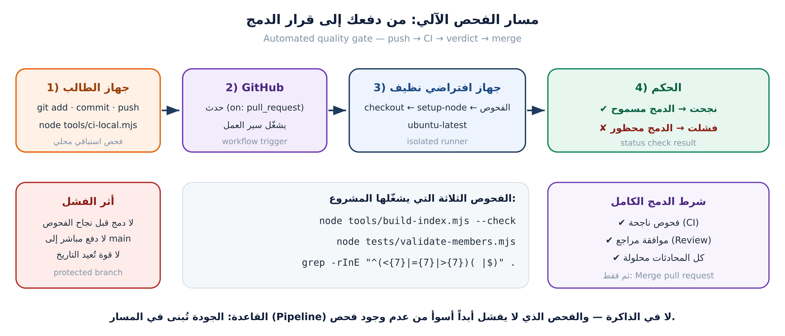

v1.0.0 حقيقيهذه الوحدة اختيارية، لكنها الأقرب لبيئة العمل الحقيقية في البرنامج كله.
الفحص الآلي يقدّم حكماً (نجاح/فشل)، وحماية الفرع تفرض قواعد وصول. كلاهما ضروري، ولا أحدهما بديل عن الآخر.

# .github/workflows/validate.yml
name: validate
on:
pull_request:
branches: [ main ]
push:
branches: [ main ]
concurrency:
group: validate-${{ github.ref }}
cancel-in-progress: true
jobs:
checks:
runs-on: ubuntu-latest
steps:
- uses: actions/checkout@v4
- uses: actions/setup-node@v4
with: { node-version: '20' }
- run: node tools/build-index.mjs
- run: node tests/validate-members.mjs
- run: git diff --exit-code -- data/members-index.json data/members-bundle.jsconcurrency مع cancel-in-progress؟ (ليلغي الفحص القديم عند دفعة جديدة، فلا ننتظر نتائج قديمة)سؤال حاسم: ماذا تكشف الخطوة الأخيرة git diff --exit-code؟ ← نسيان إعادة توليد الفهرس بعد إضافة بطاقة — أشهر خطأ في هذا المشروع.
$ node tools/ci-local.mjs
▸ الفهرس مُحدَّث / index up to date … ✔ نجح
▸ بطاقات الأعضاء صحيحة / member cards valid … ✔ نجح
▸ لا علامات تعارض / no conflict markers … ✔ نجح
───────────────────────────────────────────────────
✔ كل الفحوص نجحت — آمن للرفع (git push) / All checks passed.
عادة احترافية: شغّل الفحص محلياً قبل الدفع. لا ترسل عملاً ليقوم غيرك باكتشاف أخطائه.
# الفخ الأول: بطاقة تحمل وسم CHANGEME $ node tests/validate-members.mjs ✘ خطأ: يبدو أن البطاقة نسخة غير معدَّلة (الوسم CHANGEME موجود ولم يُستبدل). الملف: data/members/omar-qa.json # الفخ الثاني: نسيت إعادة توليد الفهرس $ git diff --exit-code -- data/members-index.json diff --git a/data/members-index.json b/data/members-index.json --- a/data/members-index.json +++ b/data/members-index.json @@ -5,6 +5,7 @@ { "username": "leen-docs", ... } + { "username": "omar-qa", ... } exit status 1 ← الفحص سيفشل حتى تصلح هذا
# الفحص القديم (غير دقيق): $ grep -rInE "^(<<<<<<<|>>>>>>>|=======)$" --exclude-dir=.git . # ثلاث ثغرات، جرّبها على فرع تجريبي: # 1) نطاق محدود بامتدادات → تجاهل sandbox/team-slogan.txt ← الأخطر # 2) يشترط العلامة وحدها في السطر؛ والحقيقية <<<<<<< HEAD # 3) إيجابيات كاذبة على سطر ======= فاصل في التوثيق بعلامات دمج
لذلك المهمة الأخيرة في سجل التغييرات تكتب الفحص الصحيح:
grep -rInE "^(<{7}|={7}|>{7})( |$)" --exclude-dir=.git .
$ node tools/build-index.mjs [build-index] ✔ تم توليد الفهرس: 7 بطاقة. $ node tests/validate-members.mjs --- النتيجة / Result: 7 بطاقة، 0 خطأ، 0 تحذير --- $ git add data/members-index.json data/members-bundle.js $ git commit -m "chore(data): regenerate members index after adding card" $ git push
| القاعدة | القيمة | لماذا |
|---|---|---|
| منع الدفع المباشر إلى main | ✔ | لا تجاوز للمراجعة |
| طلب موافقة واحدة على الأقل | 1 | مراجعة بشرية حقيقية |
| فحص مطلوب قبل الدمج | validate | لا دمج بفحص فاشل |
| منع القوة (force push) | ✔ | لا حذف لتاريخ الفريق |
| منع حذف الفرع | ✔ | لا فقدان مفاجئ |
حماية الفرع ليست ثقة بالآخرين، بل تقليل لاحتمال الخطأ البشري — بما فيه خطؤك أنت.
# .github/CODEOWNERS # الترتيب مهم: الأخص سطراً يفوز /data/members/site-config.json @instructor-team /data/members/ @instructor-team /tests/ @instructor-team @qa-lead /docs/ @docs-team * @instructor-team
/data/members/ يحمي بطاقات الطلاب، لا يسمح بتعديل بيانات عضوية أساسية$ git switch main && git pull --ff-only $ git tag -a v1.0.0 -m "الإصدار الأول: بطاقات الفريق + CI + صفحات النشر" Tagger: Workshop Instructor <instructor@example.com> Date: Tue Oct 6 12:05:41 2026 +0300 $ git show v1.0.0 --stat --no-patch commit 0b1c2d3... ← يشير إلى عقدة الدمج الرئيسية $ git push origin v1.0.0 To https://github.com/<org>/class-team-hub.git * [new tag] v1.0.0 -> v1.0.0
git ls-remote --tags origin هو الدليل الوحيد على أن الوسم على الخادم. وسم محلي لا يظهر لأحد ولا يمكن لأحد استخدامه.
| خفيف (lightweight) | معنون (annotated) | |
|---|---|---|
| الأمر | git tag v1.0.0 | git tag -a v1.0.0 -m "..." |
| من وسم؟ | لا تسجيل | اسم ووقت ورسالة |
| الشائع في | علامات محلية سريعة | الإصدارات الرسمية |
| الاستخدام مع Releases | غير مناسب | ✔ الموصى به |
git tag -l · git tag -n1 · git show v1.0.0 --stat --no-patch · git ls-remote --tags origin| نوع التغيير | مثال من مشروعنا | الرقم الذي يزيد |
|---|---|---|
| كسر التوافق | تغيير بنية بطاقة موجودة | MAJOR (2.0.0) |
| ميزة جديدة متوافقة | صفحة «الأسئلة الشائعة» | MINOR (1.1.0) |
| إصلاح | تصحيح محاذاة البطاقة | PATCH (1.0.1) |
$ git tag -l v1.0.0 $ git tag -n1 v1.0.0 الإصدار الأول: بطاقات الفريق + CI
$ git add CHANGELOG.md $ git commit -m "docs(changelog): add release notes for v1.0.0" $ git push GitHub → Releases → Draft a new release Tag: v1.0.0 Target: main Title: v1.0.0 — أول إصدار مستقر Description: ملخص التغييرات من CHANGELOG.md → Publish release
# من CHANGELOG.md ## [1.0.0] - 2026-10-06 ### Added - بطاقات تعريفية لكل أعضاء الفريق - فحص آلي عند كل طلب سحب (validate.yml)
إتقان الأربعة — CI + الحماية + CODEOWNERS + الإصدار — هو الفرق بين «أعرف Git» و«جاهز للعمل في فريق هندسي».
الخطوة التالية بعد الورشة: طبّق نفس العملية على مشروعك الشخصي، وشارك الرابط معي للمراجعة.